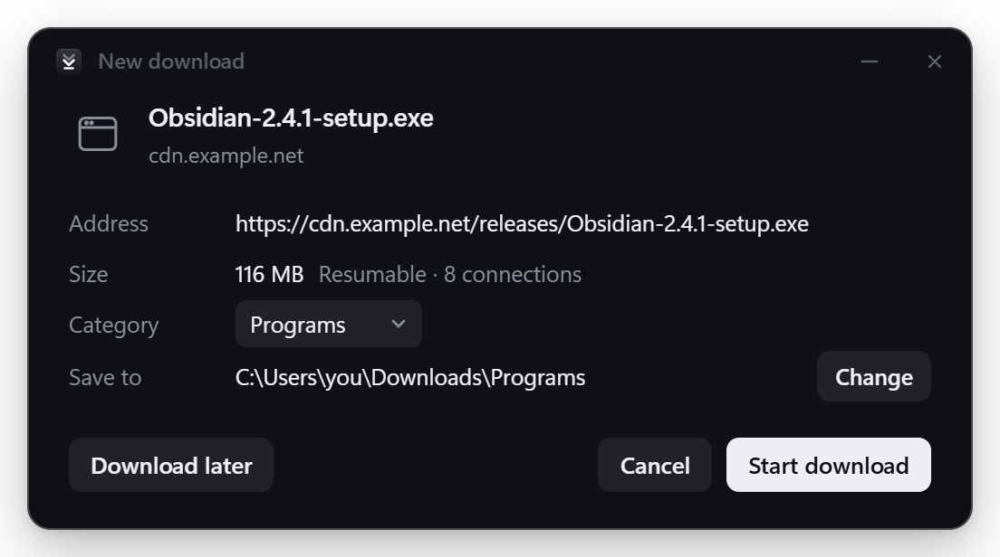
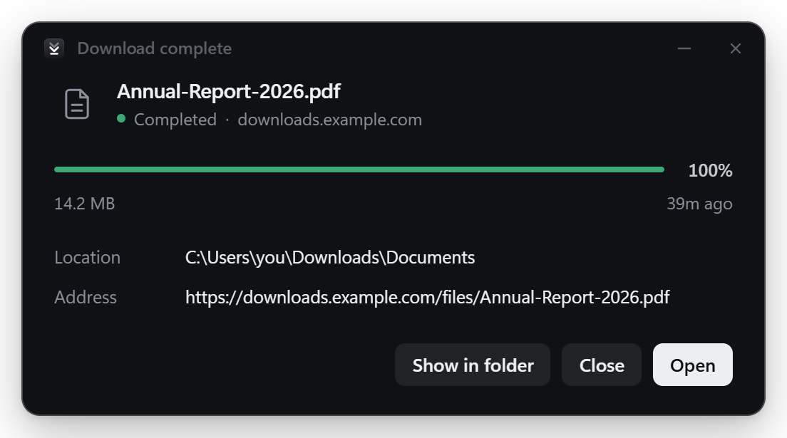

Downloads at the speed of your connection.
SwiftDL splits every file across many connections, picks up where it left off after anything, and takes over downloads from your browser. Free and open source.
Windows, macOS and Linux


Fast by design
Eight connections. An eighth of the time.
Many servers cap how fast a single connection can go. Your browser uses one; SwiftDL uses up to 32, and keeps every one of them busy until the last byte.
64 MiB file, server limits each connection to 2 MB/s. Run it yourself with tools/throttle_server.py.
Features
Everything a download needs. Nothing it doesn't.
A window for every download
Click a download in your browser and a small window asks where to save it. Press Start and the same window shows live progress, every connection's part, and finally a summary with Open and Show in folder.

Know what you're getting first
SwiftDL checks the real name, size and type before downloading, and whether the server can resume it.

Done means done
A clear summary when it finishes, with the file one click away. Close the window and SwiftDL keeps working from the tray.

Resume anything
Pause, quit, lose Wi-Fi or crash. Progress is saved every second.
Smart splitting
A connection that finishes early takes half of the biggest part left.
No joining step
Every connection writes straight into the final file.
Video button
Grab the video and audio files a page plays, from a button on the player.
Queue and speed limit
Choose how many run at once and cap total bandwidth.
Tidy by default
Files land in Video, Music, Programs, Compressed and Documents.
Command palette
Press Ctrl K to find any download or run any action.
Logins just work
The extension passes your cookies, so downloads behind a sign-in go through.
Private
No account, analytics or telemetry. It only talks to the servers you download from.
How it works
Five steps, every download.
Written in Rust, with plain HTTP range requests. No proprietary protocol, no account, no cloud.
- 01
Check
Ask the server for one byte to learn the size and whether parts are allowed.
- 02
Reserve
Create the full-size file so every connection writes to its own place.
- 03
Split
Divide the file into parts, one range request per connection.
- 04
Rebalance
Early finishers take over half of the largest part left.
- 05
Save progress
The missing ranges are saved every second. That's what makes resume work.
Browser extension
Click download. SwiftDL takes it from there.
The extension comes with the app and works in Chrome, Edge, Brave and Vivaldi. SwiftDL walks you through adding it the first time you open it.
- Catches downloads with your cookies and referrer, so sign-ins carry over.
- Download video button over players, listing the files a page loaded.
- Right-click any link or media for Download with SwiftDL.
- Stays out of the way: hold Alt to let the browser handle a link, or turn it off per site.
Questions
Is it really faster?
When the server limits each connection, which many do, yes, by roughly the number of connections. When one connection already fills your internet line, more connections can't add speed you don't have, but resume and the queue still help.
Can it download from YouTube or Netflix?
Not yet. Those sites stream video in small pieces (HLS or DASH), which needs stream support in the engine. DRM-protected video will never be supported.
What if my PC crashes mid-download?
Open SwiftDL and press Resume. Progress is saved every second, so at most a second of data is fetched again, as long as the server supports resuming. SwiftDL tells you up front when it doesn't.
Why does Windows or macOS warn me when installing?
The installers aren't code-signed yet, which costs money every year. On Windows choose More info, then Run anyway. On macOS, right-click the app and choose Open. The download page explains more.
Does SwiftDL collect any data?
No. No accounts, analytics or telemetry. It only connects to the servers you download from, and to GitHub when you open this site.
Is it really free?
Yes. SwiftDL is MIT licensed. The code is on GitHub, and contributions are welcome.